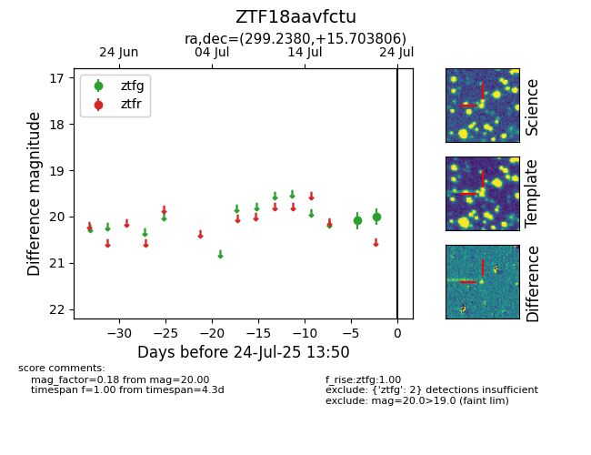

Target ZTF18aavfctu at 2025-07-24 13:50, see:
FINK: fink-portal.org/ZTF18aavfctu
Lasair: lasair-ztf.lsst.ac.uk/objects/ZTF18aavfctu
ALeRCE: alerce.online/object/ZTF18aavfctu
alt names
ZTF18aavfctu (ztf,fink)
coordinates:
equatorial (ra, dec) = (299.2380,+15.70381)
galactic (l, b) = (54.4775,-6.78678)
photometry
last ztfg=20.00
2 ztfg detections
